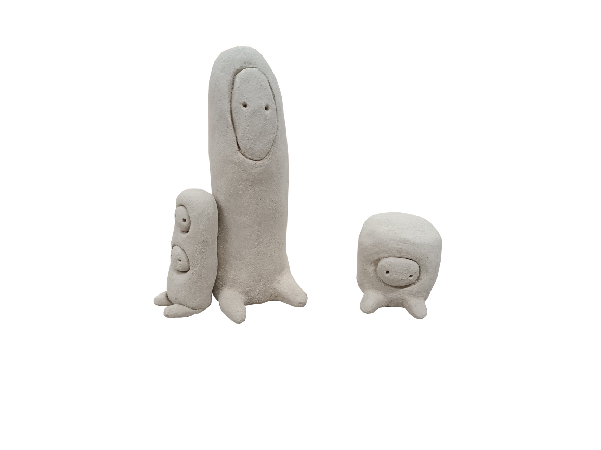

Céramique
J'ai créé de petites créatures en céramique pour qu'elles investissent les moindres recoins.
Le but de ce projet est de les dissimuler dans des trous et des interstices minuscules afin d'attirer l'attention là où personne ne regarde habituellement.


